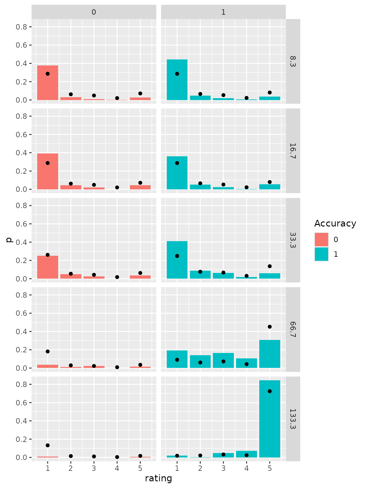
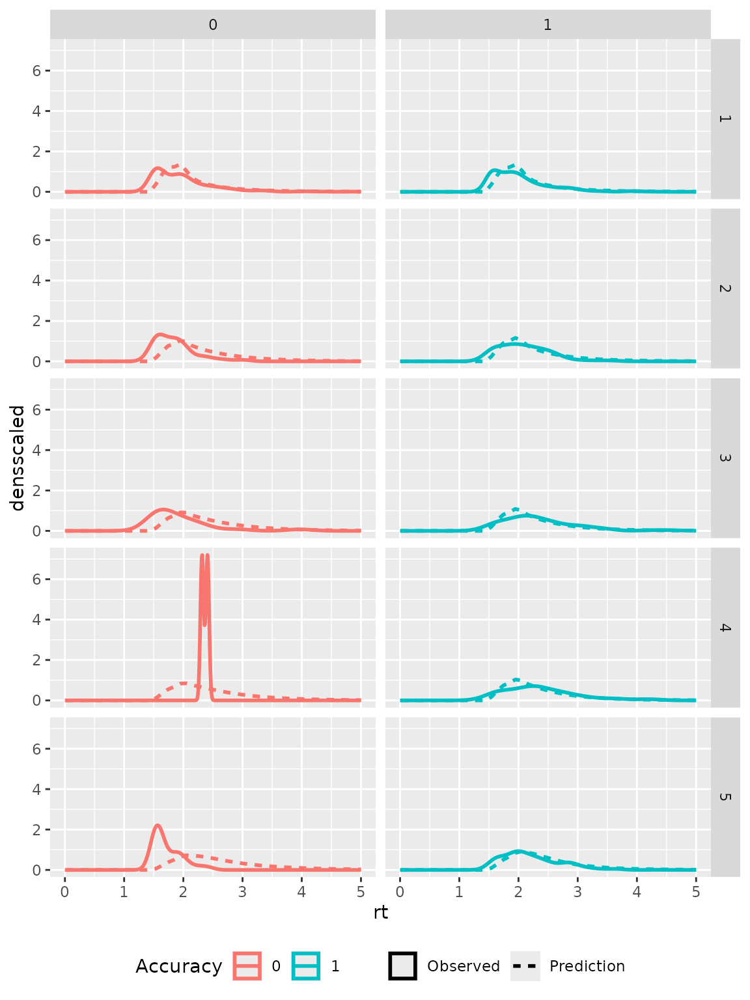

Fitting a dynamical confidence model to a data set
Sebastian Hellmann
Source:vignettes/dynConfiR.Rmd
dynConfiR.Rmd
library(dynConfiR)
library(dplyr)
#>
#> Attaching package: 'dplyr'
#> The following objects are masked from 'package:stats':
#>
#> filter, lag
#> The following objects are masked from 'package:base':
#>
#> intersect, setdiff, setequal, union
library(ggplot2)This vignette shows how to fit the models and use model parameters to
predict and simulate new data. It covers only how to get a quick fit to
a single participant (i.e. only one set of fitted parameters) for a
single model. The wrapper function fitRTConfModels may be
used to fit several models to several independent participants in
parallel and with one command, which usually takes quite a while (around
several days depending also on the number of trials per
participant).
The dynamic weighted evidence and visibility model (dynWEV) is one possible model. See https://osf.io/9jfqr/ for the theoretical description of this and the other models.
Import Data
The ConfidenceOrientation dataset is included in the
package and can be loaded after the package is loaded. We subset to work
only with the data from one participant and pick only the theoretically
relevant columns.
data("ConfidenceOrientation")
part8 <- ConfidenceOrientation %>%
filter(participant == 8) %>%
select(SOA, stimulus, response, rt, disc_rating)
head(part8)
#> # A tibble: 6 × 5
#> SOA stimulus response rt disc_rating
#> <dbl> <chr> <chr> <dbl> <dbl>
#> 1 66.7 senkrecht senkrecht 2.45 5
#> 2 8.3 waagrecht senkrecht 2.63 1
#> 3 8.3 senkrecht senkrecht 3.16 1
#> 4 16.7 senkrecht senkrecht 2.61 1
#> 5 8.3 senkrecht senkrecht 3.83 1
#> 6 133. senkrecht senkrecht 2.68 5Call fitting function
A specific model, in this example the dynWEV model, is fitted With a
simple call to the function fitRTConf.
The fitting functions either require the columns
condition, stimulus, response (or
correct), rt, and rating to be
present in the data argument or alternatively arguments
that specify the mapping of column names to the required variables with
e.g. condition="SOA". For simplicity we rename the column
names before fitting, to have congruent column names in data and later
predictions.
As the fitting procedure takes some time to deliver reasonable fits, we load previously fitted parameters into the environment (hidden code) and comment the actual function call.
To get a fast (but probably rather inaccurate) fit that is likely to
represent only a locally minimizing maximum likelihood estimation one
may use several strategies: - the argument
grid_search=FALSE prevents the time consuming grid search
for the best starting values - adjusting the values in the
opts argument, which is a list, reduces the time of the
actual optimization procedure - "nAttempts"=1 forces only
the best set of initial parameters to be optimized -
"nRestarts"=1 if one does not want to restart the
optimization routine several times - one may also restrict some
parameters that thus not have to be fit. Note, that this has theoretical
implications on what the model may predict. There are several common
restrictions - an unbiased starting point: z=0.5 - no
variation in starting point: sz=0 - symmetric confidence
thresholds for both possible responses: sym_thetas = TRUE -
no variation in non-decision time: st0=0
Finally, as in this experiment confidence was reported simultaneously
with the discrimination response, we set
restr_tau= "simult_conf" (see documentation).
part8 <- part8 %>% rename(condition=SOA,
rating = disc_rating)
# parfit <- fitRTConf(part8, "dynWEV",
# restr_tau="simult_conf")
parfit
#> v1 v2 v3 v4 v5 sv a
#> 1 0.0372688 0.02975593 0.2286821 0.9073326 1.519281 0.7033667 1.990934
#> z sz t0 st0 thetaLower1 thetaLower2 thetaLower3
#> 1 0.4840425 0.968085 0.01379258 0.5047345 0.9779324 1.400266 1.651361
#> thetaLower4 thetaUpper1 thetaUpper2 thetaUpper3 thetaUpper4 tau w
#> 1 1.826896 0.8949651 1.219724 1.674355 1.858899 1.497835 0.632632
#> svis sigvis fixed negLogLik N k BIC AICc
#> 1 0.00228473 0.06989718 sym_thetas = TRUE 3130.487 1611 23 6430.819 6307.611
#> AIC
#> 1 6306.973Prediction
After fitting the parameters to the empirical data, these parameters
are used to compute the response and response time distribution
predicted by the model. One could use the high-level functions
predictConf and predictRT here (again for
several participants and/or models there are the wrappers
predictConfModels and predictRTModels), but we
use predictWEV_Conf and predictWEV_Conf to
specify the precision argument to speed up the
computations.
predictedResponses <-
predictWEV_Conf(parfit, "dynWEV", simult_conf = TRUE,
precision = 1e-3, maxrt = 5, subdivisions = 50)
predictedRTdist <-
predictWEV_RT(parfit, "dynWEV", simult_conf = TRUE,
maxrt = 5, precision = 1e-3, subdivisions = 50,
scaled=TRUE, DistConf = predictedResponses)
print(head(predictedResponses))
#> condition stimulus response correct rating p info err
#> 1 1 1 1 1 1 0.26584081 OK 6.893660e-07
#> 2 2 1 1 1 1 0.26705120 OK 6.916824e-07
#> 3 3 1 1 1 1 0.22905816 OK 6.192858e-07
#> 4 4 1 1 1 1 0.08011349 OK 2.837693e-07
#> 5 5 1 1 1 1 0.01564043 OK 1.173039e-04
#> 6 1 -1 1 0 1 0.26674388 OK 6.979109e-07
print(head(predictedRTdist))
#> condition stimulus response correct rating rt dens densscaled
#> 1 1 1 1 1 1 0.01379258 0 0
#> 2 1 1 1 1 1 0.11555191 0 0
#> 3 1 1 1 1 1 0.21731125 0 0
#> 4 1 1 1 1 1 0.31907058 0 0
#> 5 1 1 1 1 1 0.42082992 0 0
#> 6 1 1 1 1 1 0.52258925 0 0Visual comparison
The predicted distributions may be visually compared to the empirical distributions to check how accurately the model fits the data. Therefore, we transform the condition column in the prediction data sets to fit the one in the empirical data and aggregate the data sets over stimulus and response identity and distinguish only correct and incorrect responses.
part8 <- part8 %>%
mutate(condition = as.factor(condition),
correct = as.numeric(stimulus==response))
empirical_response_dist <- part8 %>%
group_by(condition) %>%
mutate(ntrials = n()) %>%
group_by(correct, condition, rating) %>%
summarise(p = n()/ntrials[1], .groups = "drop")
predictedResponses <- predictedResponses %>%
mutate(condition = factor(condition, labels=levels(part8$condition))) %>%
group_by(correct, condition, rating) %>%
summarise(p = mean(p), .groups = "drop")
predictedRTdist <- predictedRTdist %>%
mutate(condition = factor(condition, labels=levels(part8$condition))) %>%
group_by(correct, rating, rt) %>%
summarise(dens = mean(dens),
densscaled = mean(densscaled), .groups = "drop")
ggplot(empirical_response_dist, aes(x=rating, y=p)) +
geom_bar(aes(fill=as.factor(correct)), stat="identity")+
geom_point(data=predictedResponses) +
scale_fill_discrete(name="Accuracy")+
facet_grid(cols=vars(correct), rows=vars(condition))
ggplot(subset(part8, rt<18), aes(x=rt, color=as.factor(correct))) +
geom_density(aes(linetype="Observed"), size=1.2)+
geom_line(data = predictedRTdist,
aes(y=densscaled, linetype="Prediction"),
size=1.2)+
scale_color_discrete(name="Accuracy")+
scale_linetype_discrete(name="")+
theme(legend.position = "bottom")+
xlim(0, 5)+
facet_grid(rows=vars(rating), cols=vars(correct))
#> Warning: Using `size` aesthetic for lines was deprecated in ggplot2 3.4.0.
#> ℹ Please use `linewidth` instead.
#> This warning is displayed once every 8 hours.
#> Call `lifecycle::last_lifecycle_warnings()` to see where this warning was
#> generated.
#> Warning: Removed 4 rows containing non-finite values (`stat_density()`).